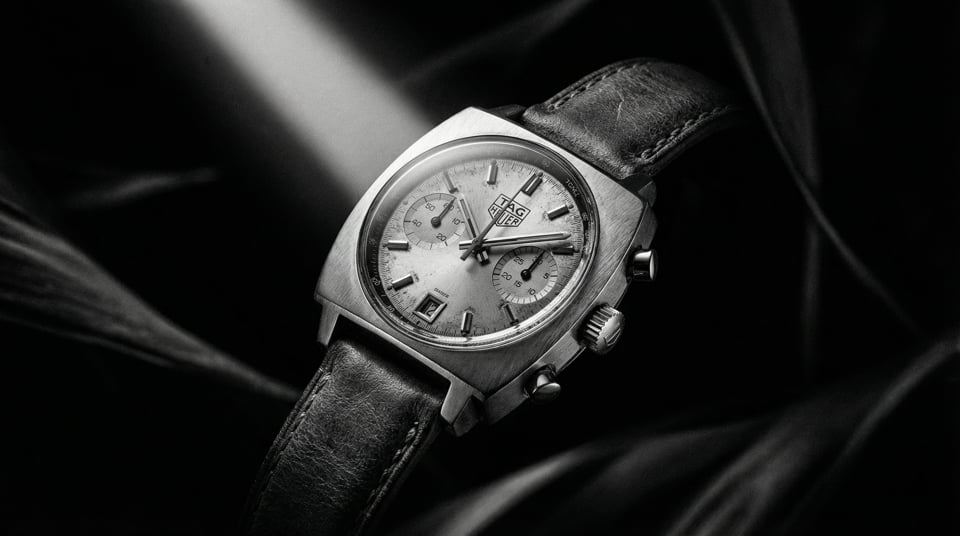
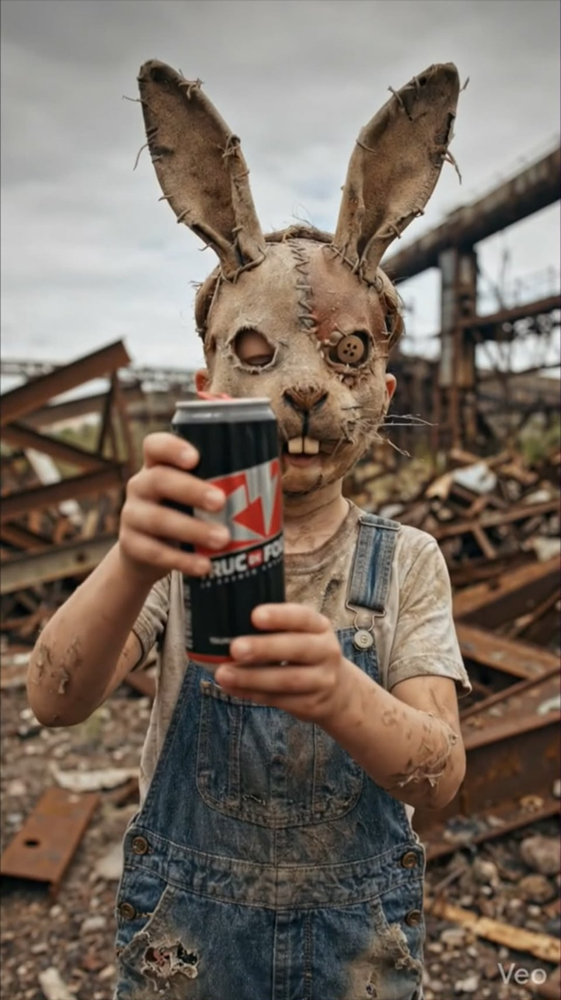

ŒUVRE 08TAG Heuer AI
08
TAG Heuer AI
Spec film · Publicité · IA générative
Un film publicitaire indépendant autour de l’horlogerie, qui met en valeur la montre, ses matières et sa lumière.
ŒUVRE 10 / Film publicitaire · Boisson · IA générative
Un film publicitaire en format vertical, dans un univers industriel peuplé de personnages masqués, autour de la boisson Truc de Fou.

NOTE DE LECTURE / 10
Le cadre vertical concentre le regard sur le produit et les silhouettes masquées dans le décor industriel.
ÉCHOS / AUTRES ŒUVRES

Spec film · Publicité · IA générative
Un film publicitaire indépendant autour de l’horlogerie, qui met en valeur la montre, ses matières et sa lumière.

Film publicitaire · Boisson · IA générative
Une boisson transposée dans un univers lunaire : un rover, un astronaute et une canette au cœur de la mise en scène.